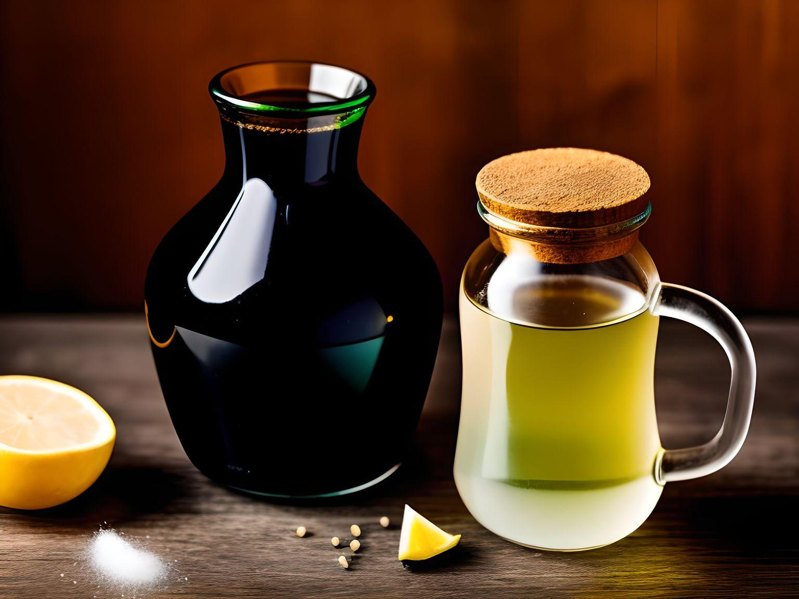

Elixir of Star Sages

The Elixir of Star Sages, with its shimmering blue hue and ethereal ingredients, enhances
intuition and insight, connecting the drinker to the cosmos' wisdom, fostering inner clarity
and a celestial bond.
- 3 Moonflowers
- A pinch of Elf Dust
- 1 Crystal Tear
- 5 Unicorn Hair Locks
- A Whisper of Mist Ghost Essence
- 7 Sparkling Star Shards
- Begin on a clear night, when the sky is adorned with twinkling stars.
Ensure the energy in the air is particularly potent.
- Gently collect the 3 Moonflowers, placing their delicate blooms in a
silver basket. Make sure they're touched by the light of the full moon.
- Combine a pinch of Elf Dust with the mysterious Crystal Tear in a crystal bowl dusted with
Elf Dust. This mixture will transform into a shimmering paste.
- BAdd the 5 Unicorn Hair Locks and stir them clockwise, whispering ancient natural wisdom as you do.
- Warm the Whisper of Mist Ghost Essence over a blue flame until it settles gently over the other ingredients,
binding them together.
- In a specially cut crystal vessel, pour the mixture from the crystal bowl and add the 7 Sparkling Star Shards.
The shards will magically hover within the elixir.
- Leave the elixir under the twinkling starry sky until the first light of dawn kisses the horizon. During this time,
it will absorb and amplify the powers of the stars.
- The Elixir of Star Sages is now ready for consumption. Drink it in small sips while focusing on your inner wisdom
and intuition. The forces of the stars will flow through you, illuminating your mind.